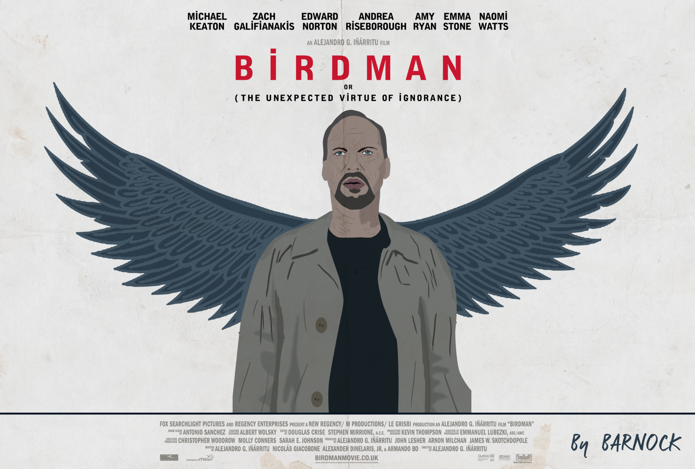

Birdman
Published: October 2014
Alejandro González Iñárritu's "Birdman" is a technically brilliant exploration of fame, ego, and artistic validation. The film, shot to appear as one continuous take, follows an aging Hollywood actor struggling to maintain relevance as he attempts to mount a Broadway production while wrestling with his own demons and past success.

Michael Keaton delivers a career-defining performance, capturing the vulnerability and pride of a man desperate to prove his worth. The film's technical achievement—the illusion of being filmed in one unbroken take—is stunning and contributes to the sense of mounting chaos and psychological unraveling. The supporting cast, including Edward Norton and Naomi Watts, is exceptional.
The film's exploration of the distinction between art and entertainment, and the critic's role in validating both, remains strikingly relevant. Combined with a pulsing jazz score and innovative cinematography, "Birdman" is a thrilling meditation on identity, ambition, and the human need for recognition.